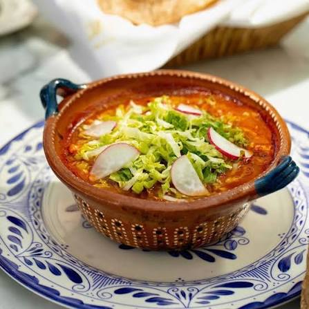

Platillos
Descubre nuestros sabores mexicanos.
- Tacos
- Pozole, mole y chiles
- Salsas




Ubicación
Encuéntranos en [dirección del restaurante].
Bebidas
Conoce nuestra selección de bebidas.
Horarios
[Agrega aquí los días y horarios de atención.]
Instalaciones
Conoce los espacios que tenemos para recibirte.
Nuestra historia y tradición
La historia del restaurante
Sazón 100% Mexicano surge del deseo de compartir el cariño por la cocina mexicana y sus sabores. Cada visita es una invitación a disfrutar platillos que evocan nuestras raíces y a crear nuevos momentos alrededor de la mesa.
Nuestra tradición
Celebramos la tradición mexicana reuniendo buenos sabores, hospitalidad y el gusto de compartir. Queremos que cada persona se sienta bienvenida y encuentre en cada platillo una razón para volver.